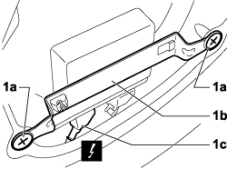
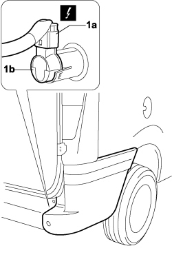
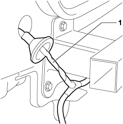

5580H06 WIRING FOR PARKING SENSOR SYSTEM - R.R.
- Path
- Procedures > 55 ELECTRICAL EQUIPMENT > 5580 SPECIAL ACCESSORIES > 5580H PARKING OBSTACLE DETECTION DEVICE > 5580H06 WIRING FOR PARKING SENSOR SYSTEM - R.R.
- Kind
- repair procedure (removal / refitting; the operation number is the code)
- Applies to
- engines: 1.4 8v, 1.6 16v, 1.3 JTD 16V, 1.9 JTD 8V; all production periods
- Interactive page
- https://sloeber94.github.io/elrnDB-fDbl/en/#/223000177
Applies to: engines: 1.4 8v, 1.6 16v, 1.3 JTD 16V, 1.9 JTD 8V; production: da 12/03; only with equipment: MY 2005
 Removing
Removing
 Refitting
RefittingTurn the ignition key to the OFF position.
Lift the bonnet
Disconnect the negative battery terminal.
Description | Connector | |
|---|---|---|
- | BATTERY |
Op. 7040H80 REAR PARCEL SHELF - R.R.
1. Working from inside the vehicle, unscrew bolts (1a) securing bracket (1b) to the body, disconnect electrical connection (1c) and apply a probe to the end to facilitate subsequent reinsertion.
Description | Connector | |
|---|---|---|
1c | PARKING SENSOR CONTROL UNIT |

Applies to: engines: 1.4 8v, 1.6 16v, 1.3 JTD 16V, 1.9 JTD 8V; production: da 12/03; only with equipment: MY 2005
Working on the left side of the vehicle:
Op. 7210E67 R.R. REAR BUMPER - CENTRAL ELEMENT
Op. 7210E68 R.R. REAR BUMPER - SIDE ELEMENT
1. Working on the right side of the vehicle, disconnect electrical connection (1a) from parking sensor (1b).
Description | Connector | |
|---|---|---|
1a | PARKING SENSOR UNIT |

Applies to: engines: 1.4 8v, 1.6 16v, 1.3 JTD 16V, 1.9 JTD 8V; production: da 12/03; only with equipment: MY 2005
1. Working on the left side of the vehicle, release the parking sensor system wiring and remove from the vehicle.

Applies to: engines: 1.4 8v, 1.6 16v, 1.3 JTD 16V, 1.9 JTD 8V; production: da 12/03; only with equipment: MY 2005
Refitting
RemovingCheck that the parkaing sensor system wiring is not damaged.
Working on the left side of the vehicle, insert the parking sensor system wiring using the probe inserted previously.
Working on the right side of the vehicle, connect electrical connection to the right external parking sensor.
Description | Connector | |
|---|---|---|
- | PARKING SENSOR UNIT |
Working on the left side of the vehicle:
Op. 7210E68 R.R. REAR BUMPER - SIDE ELEMENT
Op. 7210E67 R.R. REAR BUMPER - CENTRAL ELEMENT
Working from inside the vehicle, connect the electrical connection to the control unit.
Description | Connector | |
|---|---|---|
- | PARKING SENSOR CONTROL UNIT |
Tighten the bolts fixing the bracket to the bodyshell.
Op. 7040H80 REAR PARCEL SHELF - R.R.
Connect the negative battery terminal.
Description | Connector | |
|---|---|---|
- | BATTERY |